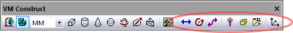

Simulation»Construct Axis (QUEST only)
{kind=link}
Provides the ability to add axes (i.e., things that move) to the model. These menu selections are only available in QUEST. The “Machines” section must be opened before you can add axes to the model. The VM Construct tool bar provides buttons (as shown circled above) for each of the axis types that can be constructed.
All axes share some common parameters, listed below:
Name: Axis names are used in the Model Navigator in QUEST. Linear, Rotary and Curve axis names also appear in (and can be controlled from) the QUEST lower right Axes window as well as the Controller Axes window in GENER and CERUN. VM assigns default names when objects are created. You should change the default to something that is both short and meaningful.
Unit: Specifies the unit of measure for all non-rotary values (angles are always specified in degrees).
Position: Specifies the X, Y and Z axis position of the origin of the current axis in relation to the origin and rotational alignment of the parent object. When world coordinates are selected (Simulation»Use World CS), the position of the axis is shown in world coordinates instead of relative to the parent object. When constructing an axis, the mouse pointer can be used to define the axis origin.
OK button: Creates the axis as defined.
Cancel button: Ignores this axis creation request.
Apply button: Updates the simulation window to show the effects of the latest changes.
Rotate button: Use this button to rotate the entity to its required final orientation. When an entity is rotated, anything attached below this entity in the Navigator will be defined in the new frame of rotation.
Linear, Rotary and Curve axes share the following additional parameters:
Range: Specifies the Minimum and Maximum travel extent of the axis with respect to the axis origin position. The range does not have to include the zero position.
Slave axis to: Specifies the name of another axis that will be used to control the current one. When the named axis moves, the current axis will also be moved. You can specify a Scaling factor to change the proportion of motion, and even the direction (by specifying a negative scale factor). An axis that is slaved will not appear in the QUEST lower right Axes window or the Controller Axes window in GENER and CERUN. Motion of a slaved axis is only possible by moving the parent axis (i.e., the one the axis is slaved to).
Default position: Specifies the position the axis will be set to when the model is loaded, or when the axis position is reset to its default.
When you add a new axis, it will appear in the Model Navigator, attached as a child (i.e., below) the object that was selected in the Navigator when the axis was created. You can move the axis to a new position in the Navigator by first selecting it with the mouse, then, while holding the left-mouse button down, move to a new attachment point and release the mouse button. Moving the axis name in the model navigator will change the kinematics of the machine.
When you add a new axis, it will also appear in the lower right “Axes” window. Axes are listed in this window in the same order that they appear (top down) in the model navigator view. The default ordering of an axis can be changed by selecting the axis in the Axes window and then using the right-mouse context menu Move Axis Up (Alt Up) and Move Axis Down (Alt Down) selections (multiple axes can be moved at a time). Axes can be hidden using the Hide Axis selection. Hidden axes can be made visible again by first selecting the Show Hidden Axes selection and then toggling the Hide Axis setting of the previously hidden axis.
Axes can be grouped together under different tabs in the Axes window. This can be done by first using the right-mouse context menu New Axis Tab selection to create one or more additional tabs, then selecting the axes to be moved, and finally using the Move to Tab selection to move the selected axes to the tab. Axes tabs can be renamed, reordered, hidden, unhidden and deleted. Axes of a deleted tab will reappear in the Main tab.
The View menu on the top menu-bar also has various selections and associated shortcut keys that control the layout of axes in the Axes window.
Axes tab customization is stored with the model. Hidden axes and tabs can be unhidden at run-time unless the model is Dedicated.
Simulation»Construct Axis»Linear Axis
{kind=link}
Creates a linear axis, given an XYZ origin and the direction vector and range of interpolation. Parameters common to all axes (not listed below) can be found here.
Direction: The direction of interpolation. Linear axes that move the tool typically have a standard positive direction, and those that move the part have a negative (reversed) direction, For example, moving the part in the negative X direction has the effect of moving the tool in the positive X direction with respect to the part. Select “Custom” if the linear axis does not interpolate along one of the major axes. When Custom is selected, you must enter a Custom direction, which defines the positive sense of interpolation given its X, Y and Z-axis vector components (the values do not have to be unitized).
When defining a linear axis with a Custom orientation, you can enter the custom direction vector, or you can use a standard orientation and use the Rotate button to orient the axis. Both methods produce identical kinematics, but the Rotate method has the side effect of changing the XYZ reference coordinates for any objects attached to the axis.
Simulation»Construct Axis»Rotary Axis
{kind=link}
Creates a rotary axis, given an XYZ origin and the direction vector and range of interpolation. Parameters common to all axes (not listed below) can be found here.
Rotation axis: The axis about which the rotation occurs. Standard rotations have the A, B and C axes rotating about the X, Y and Z axes respectively. Rotary axes that move the tool (e.g., rotary heads) typically have a standard positive direction, and those that move the part (e.g., rotary tables) have a negative (reversed) direction. For example, rotating the part in a CCLW direction has the effect of moving the tool in a CLW direction with respect to the part. Select “Custom” if the rotary axis does not rotate around one of the major axes. When Custom is selected, you must enter a Custom rotation vector, which defines the X, Y and Z-axis vector components of the axis of rotation, using the right hand rule.
Use range validation: Clear this checkbox if the rotary axis has unlimited physical travel.
Spindle definition: Select the “This rotary axis connects to a spindle” checkbox if the rotary axis can double as a spindle. This is common for mill/turn lathes, where the spindle can freely rotate when turning but then be interpolated as a rotary axis when milling. VM uses the Spindle ID to differentiate between the different spindles that might be available on a machine. Once defined, a spindle can be later mapped as a milling or turning spindle using the Axes mapping tab page of the machine properties dialog. A Ratio can be specified if the spindle rotation is not 1:1.
Turret definition: Select the “This rotary axis is used as a turret” checkbox if the rotary axis defines the rotation of a lathe tool turret. VM uses the Turret number to differentiate between the different turrets that might be available on a machine. Turret number 1 should be used for the main turret. Turret number 2 should be used for a second turret if one exists. The Positioning field is used by VM to position the turrets as tools are loaded. With Automatic positioning, the turret is expected to have the available tool slots equally distributed around the perimeter. Use Predefined positioning and select the Set positions button to define the turret rotation angle for each of the available tool slots.
Label offset: Defines the offset of the informational kinematics marker along the rotation axis. Kinematics markers can be enabled or disabled using the VM Grid tool bar.
When defining a rotary axis with a Custom orientation, you can enter the custom rotation vector, or you can use a standard orientation and use the Rotate button to orient the axis. Both methods produce identical kinematics, but the Rotate method has the side effect of changing the XYZ reference coordinates for any objects attached to the axis.
Simulation»Construct Axis»Curve Axis
{kind=link}
Creates a curved profile axis, given an XYZ origin and a profile curve. Curved axes can be used to interpolate along an opened or closed track. Parameters common to all axes (not listed below) can be found here.
Profile button: Select this button to enter a 2D profile curve. The profile is defined as a series of (x, y) pairs of coordinates, one pair per line. Use the Apply button in the profile builder to see changes to the profile curve.
Translation only: When a curve axis moves, the objects that are attached to it can be moved through space as a simple translation, or they can be both translated and rotated to stay “normal” to the curve.
If a single child object is attached to a curve axis, that object is attached to the curve axis origin in the standard way. If a second object is attached to the curve axis, that object is shown moved, or both moved and rotated, to the halfway point along the curve axis. The critical concept here is the word “shown”. All objects are attached to the curve axis at the origin, but they are shown equally spaced along the curve axis. Use a Reference axis to group two or more components that must be moved together along the curved axis.
Because the profile curve is defined in the XY plane, the Rotate button must be used to orient the profile to its true position. The Rotate method has the side effect of changing the XYZ reference coordinates for any objects attached to the axis. You can eliminate this effect by attaching a “Reference Axis” to the curve axis, which you can use to rotate the coordinate system back to a standard orientation.
Simulation»Construct Axis»Tool Axis
{kind=link}
Creates a tool axis, given an XYZ origin and tool reference type. Tool axes can define the spindle control point of the machine, pockets in a tool changer, or anywhere else that tools might be stored. Parameters common to all axes (not listed below) can be found here.
Spindle: Specifies that this tool axis defines the spindle control point (SCP) of the machine. The Tool axis ID should be set to 1 (one) for the main spindle of the machine. Other tool ID’s can be used if there are additional controllable spindles on the machine. The tool axis ID to use for a given tool can be selected in the model Load Tool Event macro.
Turret: Specifies that this tool axis defines one of a series of available tool mount positions arrayed on a lathe turret. The Tool axis ID should be set to 1 (one) for the main turret of the machine. Set the ID to 2 for the side turret of the machine. The Pocket ID is used by VM to know which turret position is active based on the current tool selected. Pocket numbers must be unique for each turret.
Pocket: Specifies that this tool axis defines a pocket in the tool changer or some other holding area. A Pocket ID must be given to identify the pocket number. VM automatically moves tools in and out of pockets during tool change operations. Use the GENER and CERUN Simulation»Tools menu to assign tools to pockets.
Other: Specifies a location where tools can be held. A typical use for this type of tool axis is to define a position on a tool change mechanism where tools are held while in transit. Tools can be attached or detached from an “other” axis type using the $FMSATA macro function.
Spindle activation: Select the “This tool axis is turning when the following spindle is activated” checkbox if the tool axis represents a spindle. This is common for the spindle on milling machines, and for live tooling on mill/turn machines. You would normally not select this for a Pocket or Other tool axis type. VM uses the Spindle ID to differentiate between the different spindles that might be available on a machine. For mill/turn machines, use the Axes mapping tab page of the machine properties dialog to identify the spindle as milling or turning. For milling machines, the spindle ID should be 1 (one) for the main spindle of the machine. The choice of current active spindle can also be controlled using the $FMSMSP macro function.
Use the Rotate button to establish the orientation of the tool when it is attached to the tool axis object.
Note that, for QUEST at least, the tool axis represents one end of the kinematics chain. You cannot attach any other axis or entity to a tool axis. GENER and CERUN on the other hand allow holders and tools to be attached to a tool axis at run-time.
Simulation»Construct Axis»Stock Axis
{kind=link}
Creates a stock axis given an XYZ origin. Stock axes define the table control point (TCP) of the machine. When stock, fixtures and parts are loaded onto the machine (using GENER or CERUN), they are mounted relative to a predefined stock axis.
Part: Specifies that this stock axis defines a table control point (TCP) of the machine. The ID should be set to 1 (one) for the most common mount point used on the machine. Other stock ID’s can be used if there are additional part mount points on the machine, for example, if there are multiple work areas. Use the GENER and CERUN Simulation»Stock, Simulation»Fixture and Simulation»Part menus to import or define stock, fixture and part objects relative to stock axes.
Other: Specifies a location where stock, fixtures and parts can be held. The current active part can be set using the $PART macro variable.
Spindle activation: Select the “This stock axis is turning when the following spindle is activated” checkbox if the stock axis represents a spindle. This is common for the turning spindle on lathe machines. You would normally not select this for an Other stock axis type. VM uses the Spindle ID to differentiate between the different spindles that might be available on a machine. For mill/turn machines, use the Axes mapping tab page of the machine properties dialog to identify the spindle as milling or turning. For lathes without a C controllable axis, the spindle ID should be 1 (one) for the main turning spindle of the machine. The choice of current active spindle can also be controlled using the $FMSMSP macro function.
You can define multiple stock axes if there are different places where stock and fixtures might be loaded. For example, a tombstone with 4 faces might define 4 stock axes; each positioned and rotated (using the Rotate button) to establish a part normal vector away from the surface. If your model simulates pallet changing, you should define a stock axis at the part reference point for each pallet.
Note that, for QUEST at least, the stock axis represents one end of the kinematics chain. You cannot attach any other axis or entity to a stock axis. GENER and CERUN on the other hand allow stock fixtures and parts to be attached to a stock axis at run-time.
Simulation»Construct Axis»Head Axis
{kind=link}
Creates a head axis, given an XYZ origin and head reference type. Head axes can define the location on the machine where exchangeable heads are mounted; positions on or around the machine where heads are stored when not in use; or anywhere else where heads might be attached. Parameters common to all axes (not listed below) can be found here.
Head Socket: Specifies that this head axis defines the head control point (HCP) of the machine. The Socket ID should be set to 1 (one) for the main head control point of the machine. Other head ID’s can be used if there are additional head mount points on the machine. The head axis ID to use for a given head can be selected in the model Load Tool Event macro.
Head Station: Specifies that this head axis defines a station in the head changer or some other holding area for head devices. A Station ID must be given to identify the station number. VM automatically moves heads in and out of stations during head change operations. Use the GENER and CERUN Simulation»Heads menu to assign heads to stations.
Other: Specifies a location where heads can be held. A typical use for this type of head axis is to define a position on a head change mechanism where heads are held while in transit. Heads can be attached or detached from an “other” axis type using the $FMSATA macro function.
Spindle definition: Select the “This head axis is connected to a spindle” checkbox if the head axis transmits the spindle force to attached head devices. This is common for the main head Socket. You would normally not select this for a Station or Other head axis type. VM uses the Spindle ID to differentiate between the different spindles that might be available on a machine. For mill/turn machines, use the Axes mapping tab page of the machine properties dialog to identify the spindle as milling or turning. For milling machines, the spindle ID should be 1 (one) for the main spindle of the machine. The choice of current active spindle can also be controlled using the $FMSMSP macro function.
Default head: Select the head device that will be attached to the head axis by default at the start of processing. This can be used to define the initial layout of heads at their predefined head stations if required. Changing the default head does not affect the current state of the model as shown in QUEST.
Currently loaded head: Use this to test the head processing of the model. Loading a head into a station will adjust the model navigator tree to show the selected head attached to the head axis. It will also draw the head at the head attachment axis. Only one head can be attached to a head axis at a time.
Use the Rotate button to establish the orientation of the head when it is attached to the head axis object.
Simulation»Construct Axis»Reference Axis
{kind=link}
Creates a reference axis, given an XYZ origin and possible rotation (using the Rotate button). Reference axes do not cause motion. Instead, reference axes can be used to organize the model in the Model Navigator.
You can attach a group of related objects to a reference and then collapse the group (in the model navigator), which might make the model easier to understand. You can also use a reference to establish a new coordinate frame for a group of related objects.
At run-time, VM groups together into “stiff bodies” objects that are immovable in relation to each other. This optimization reduces the number of calculations required when moving the components that are attached to axes. Reference axes are preserved at run-time, so they can be used in the model when it is necessary to manipulate a group of components using the various $FMS macro functions.